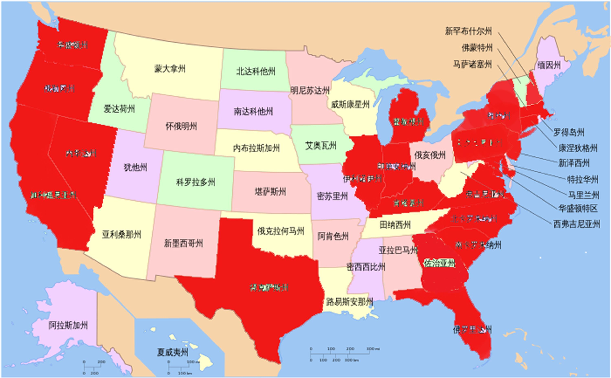
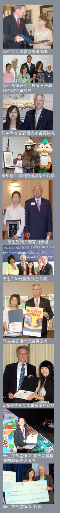
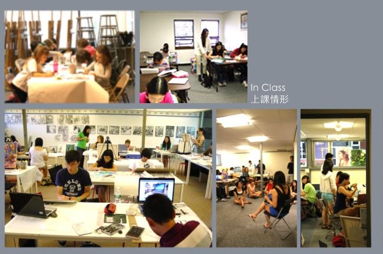

创办历史：
莎伦画院是莎伦艺术中心下属的教育机构，前身是“莎伦艺术创作室”，1997年年底在美国新泽西州北部博根郡成立。教学与管理是创办人用心点滴感悟，以智慧建立起來的。成为众人模仿跟风的目标。
四处地点：
★莎伦画院总校及申请大学艺术设计预备学校，位于美国东部新泽西州的South Brunswick市，校园占地广阔，自拥繁密的森林和小溪河流，风景优美。距离全世界大学第一名的普林斯顿大学仅20分钟。距总校不远有火车站，乘火车45分钟直达纽约曼哈顿。
★莎伦分校分别位于新泽西州北部的Parsippany市、和新泽西州中部的Piscataway市。
★纽约长岛设有莎伦校长艺术工作室，专门教授附近地区准备申请大学的学子。
★为了保证教学的长期高品质，莎伦画院将教学点压缩至最少。
教学体系：
★归纳重点、简明扼要、步骤清晰、基础扎实，便以学生吸收。
★每一步都在为下一步提高打基础，环环相连，一针见血，道明学生优缺点并对症下药。
★严谨的基础知识，帮忙学生循序渐进地学会使用高技巧，做为丰富的思想和艺术的表达方式。
★引导学生建立全新的思维逻辑，拥有创意者的习性，敏锐的观察力、想像力、条理性、专注力、深度探究能力、内涵、耐力、以及正确的审美观。
★帮助孩子们借助绘画学习，各种不同的个性缺点得以调整，人格性情得以健全完善。
★最终目的是－塑造有领袖才能的，未来在各行各业中的创意开拓者。
莎伦成员：
★现由美国工商管理硕士背景的专业人士任日常运营管理。
★普林斯顿大学电脑研究背景的博士团队任电脑数据管理。
★教师团队成员包括中、美、欧、俄、日、韩、菲律宾等族裔。绝大多数都是从小在莎伦画院学画长大，同时受莎伦＂小管理者计划＂的训练。大学毕业后返校任教。
★老师分别具有纯绘画、美术教育、工业设计、服装设计、珠宝设计、室内设计、建筑设计、环境规划设计、广告设计、广告摄影、平面设计、电脑数位艺术设计、交互设计、插图设计等专业特长。
★教师团队充满青春活力，拥有无限的创意热情。
教师培训：
★由创办人兼院长刘莎伦，主导策略方向和教学方向，亲自负责部份教学。院长办公室设有高级教育经理、院长助理等重要人员，共同监督教学品质。
★所有老师无论具有何所名校背景，均接受严格的“莎伦教学方法”的训练。
★教师每年有三段再培训时间，无数的个别培训时段。每周有数次教学和管理会议。暑假加强营每天有教学总结会议。每年有严格的年度考核制度，未达合格者将被辞退。
★注重老师员工的不断培训提升， 力保德才智品格传承，是莎伦的精神。
因才施教：
★莎伦教学正规系统、由简至繁，举一返三，适合真正想掌握一技之长的学生。
★根据学生程度、特点及需要，给予个别辅导，不需受别人程度的影响，每个人的潜力得以最大程度的发挥。
.jpg)

红色区域为sharron学生国家及地区
红色区域为sharron学生国家及地区
学生范围：
★莎伦学生包括儿童青少年；大学美术预科生、转校生、在校大学生、研究生...
★学生来自新泽西州各地，及纽约州、纽约市、宾州、加州、密西根州、印地安那州、奥海尔州、芝加哥市等美国各地。以及法国、加拿大、澳大利亚、新西兰、中国大陆、香港、台湾等数十个国家和地区。
★学生族裔包括：华、印度、欧、非、日、韩、中东、南美州、东南亚、犹太裔等。
学生获奖：
★“踏实、严谨、精益、卓越、极致！”“极具严谨、极富创意！”是创办人及领导者以生命全心投入的自我高度。
★因此画院能成果倍出。莎伦学生每年有数千人次在各种绘画艺术比赛中获奖。只要有莎伦学生参赛，各项比赛首奖几乎都由莎伦学生襄括，甚至包囊全部得奖名额。若对新州华裔得奖有名额限制，也总是莎伦学生获得名次。
★例如，美国国会举办的“全球艺术奥林匹亚”四年一届，每年全球一百多万人参赛，莎伦画院仅参加两届，每届仅一位学生参加，两次都获首奖，二位学生分别应邀至华盛顿国会大厦参加“国际儿童庆典”，并受到国会参议员等政要接见。
★每年均有莎伦学生因绘画成就，应邀至国会大厦授奖，例如：William Chen，Vivian Chen，Annie Wei， Abby Parker...其中Denis Zhang 於2007年7月初，两趟受邀至美国国会领奖，分别受到联邦参议员、联邦众议员在国会私人办公室特别单独接见...并受到前国务卿鲍尔将军的授奖...高中时期，他获得国会艺术大赛第一名，再度受邀至美国国会大厦，受到相同的联邦众议员的单独接见。其后，做为艺术特等生，他进入哈佛大学工程学院就读。
★例如，2008年Juliana Wu荣获联合国环境日海报比赛美州区第一名及全球第二名，应邀至挪威授奖，并受到挪威王子特别接见，挪威大报全版刊出挪威王子与Juliana Wu单独合影相片及新闻...她后来进入普林斯顿大学就读。
★2009年始，莎伦学生开始参加美国国会艺术大赛，每年至少有2～6位获奖，作品在国会大厦展出一年。
★不少学生因绘画成就，分别受到联邦各部门政府官员、多国政府驻美大使、马尔他总统夫人、影星兼联合国亲善大使安琪琳娜.裘莉、新州多任州长、联合国官员嘉奖。
★美国及联合国众多绘画比赛网上所刊出的优秀作品范图，绝大多数是莎伦学生作品;新州各小学、初中、高中最优秀绘画才子往往来自莎伦画院;新州政府颁发“政府最高绘画成就奖”得主来自莎伦画院⋯
艺术收藏：
★每年康奈尔大学等名校以莎伦学生的作品集印制成大学作品集范本⋯
★数百位学生作品陆续被全球各地儿童艺术馆、美术馆、博物馆收藏。如纽约世界瞩目儿童博物馆、日本儿童美术馆、台湾世界海洋文化博物馆⋯
★数十位学生的作品被美国政府联邦教育部、美国国家档案局等永久收藏⋯例如后来毕业于耶鲁大学的马婵娟、毕业于RlSD的Iris⋯
★数十位学生的作品被联合国、布丹政府、瑞士、美国等选作邮票公开发行。例如后来毕业于宾大沃顿商学院的PengPeng⋯
★不少学生作品被私人、公司、银行购买收藏，年纪最小为6岁。如Emily Tu、Steven Johan、Jonathan Johan、Abby Parker、汤瀛、Nancy Lu、Emily L...
AP艺术：
莎伦学生预修大学“AP艺术”课程均获满分。申请“国家艺术荣誉协会”百分百被接纳为会员。
大学录取：
★论文是申请大学必备的文件。目的是通过自我陈述和总结，大学能更直接地了解申请者的素质。但是，没有任何表现形式，能比得上视觉艺术更能让招生官了解你潜在的品质！大学不能要求申请者都递交艺术作品集。能递交真正优秀的艺术作品集的申请者，如毛麟角。
★莎伦画院对申请大学作品集编排与指导，不但熟知各学生的特点，也熟知各名校的各专业的不同特点要求。
★画院帮助学子以艺术特色，被哈佛、耶鲁、普林斯顿、麻省理工学院、哥伦比亚等大学名校录取，主修经济、医、法、商、工、理等专业。
★莎伦学生申请艺术设计学院或综合大学艺术设计学院，几乎都以世界第一流大学为第一志愿，康奈尔大学建筑系、宾夕法尼亚大学电脑数位艺术设计专业、罗德岛设计学院、巴赛迪那设计中心学院、伦敦中央圣马丁艺术设计学院、纽约Parsons服装设计学院、耶鲁大学美术设计学院、哈佛大学美术专业、普林斯顿大学建筑系和美术系、纽约库克联盟大学建筑学院及美术学院⋯几乎都如愿以偿。
★许许多多活生生的实例：不可能上名校的孩子因为遇到莎伦画院，上了名校，因着信心的建立，从此命运改变，未来的工作，事业，婚姻等皆不同。

专题分享：
莎伦画院举办大量的内部，或对外公开的精华专题讲座、学生大课、小组研讨等。除了画院内部各种专家演讲外，并邀请美国东、西岸最顶尖的欧洲裔、华裔、南韩裔等教育家、申请大学谘询专家、奖学金申请专家做专题分享。还有：
★儿童艺术专题讲座
★大学名校招生官讲座及一对一作品点评
★申请大学经验分享
★暑期加强营午间艺术专题讲座
★莎伦校友演讲
★职业规划辅导
★校外演讲：每年大量的莎伦学生应邀至社区、社团等处做学画经验、申请大学经验、成长经历等讲座。给同龄人和家长极大的启发与帮助。例如，2013年Connie Yu（常春藤宾州大学录取）等人受邀在华夏爱迪生中校演讲、Rita Fang(普林斯顿大学录取)和Eillen Shentu（常春藤宾州大学仸顿商学院录取）等人受邀在华夏中部中校演讲、张雨珊（最顶尖各名校建筑系录取）受邀在新州父母子女具乐部做个人专题介绍⋯
莎伦社区委员会（SACCC）：
★下设每年夏天举办的莎伦总校年度慈善画展组委会、国际学生艺术计划（含两年一届的上海莎伦慈善画展）、幼童与贫童艺术扶助计划、社区艺术鉴赏组织、小管理者计划⋯
★莎伦画院提供四年奖学金给进入全球最顶尖艺术设计学院的莎伦贫困优秀学生。
罗德岛设计学院莎伦艺术与设计学生俱乐部：
罗德岛设计学院莎伦艺术与设计学生俱乐部
(英文全称：RISD Sharron Art & Design Student Club)：
主要成员及负责人均为莎伦校友。在“设计界的哈佛大学”—RISD，唯一以艺术家和其学校的名称为俱乐部命名，在美国名校内绝无仅有。
俱樂部成員互帮互助互动。
莎伦画院为莎伦校友提供有薪实习、优先录用、职业介绍、创业辅导、品格训练等帮助⋯
价值建立：
★莎伦画院不仅是一所培养最顶尖人才的艺术学校，也不仅仅拥有指导青少年准备申请大学艺术作品集的大学预科教学能力。
★更是通过艺术，训练学生从幼童开始，建立独立思维、判断能力、胆量策略、耐心执着、坚毅个性的精英人才基地。
★每个孩子生来个性天质不同。周遭人眼中的＂丑小鸭＂，是因为没有人帮助他们找到人生的兴趣点、价值感、自信心 和目标。
★莎伦画院极具敏锐，潜心挖掘学生的优特奌，同时帮助学生，反映在各自的艺术作品中。

人生影响：
★从幼儿至青少年教育，再至帮助部分成年就业培训与心理调整，以圣经为教诲，尊重生命的价值、尊严，包容每个人的不足与缺点，最大程度的开启发掘潜质；从小养成各种良好习惯，使习惯积累成为教养，建立积极向上乐观的人生态度…
★不少学生进入大学很快成为学生领袖，以后在企业中崭露头角，纷纷感谢莎伦长期有目标的引导和要求：犀利且开阔的眼光。用心敏锐的体验。勿跟从潮流，不可缺乏自我决策判断能力。做事与绘画皆快速准确，归纳抓住要领且深入追究。长期付出，坚毅忍耐，不能急功近利。学会用视觉语言、文字、口头语言做表述，善与人沟通，并推行你的思想理念⋯
★对以学艺术的莎伦学生而言，以扎实丰厚的绘画及设计为基础，建立改变世界的哲学思想体系，最终成为全美乃至全球最顶尖的设计界领袖。